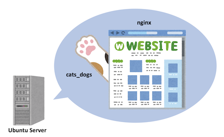
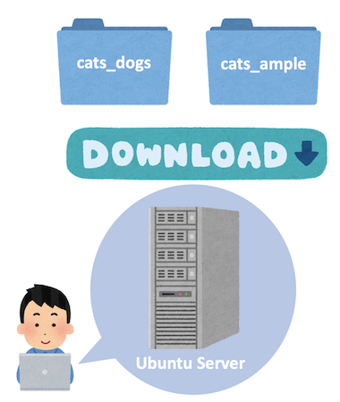

おはようございます。こんにちは。こんばんは。ふぇにっくちゅん です。
本記事から、cats_dogs の仕様書を解説していきます。
cats_dogs はカスタム性が高く、複数のモジュールに機能が分割されています。
そのため、全体を把握することも苦労すると思います。
ここからは、その苦労を少しでもゆるくするため、cats_dogs の 仕様書の読み方 や 主要なファイルの関係 を解説していきます。
解説記事は、以下の4つのパートに分けています。
また、これらの解説記事は cats_dogs の構築のデモで利用したサンプル を元に解説していきます。
そのため、まだ cats_dogs を用意できていない方は、まず先に Youtube を御覧ください。
では、上述した4つの記事を読む前に、構築デモの内容をおさらいしましょう。
デモ動画の中では、仮想環境として Ubuntu Server を利用しました。
そのサーバの中に、cats_dogs と cats_ample をダウンロードして、ファイルを配置して、アプリを起動させました。
アプリやその設定ファイル以外にも、nginx をインストールしました。
構築したアプリの構成は、Ubuntu Server の上で、nginx を Web サーバとして稼働させました。
また、その背後に cats_dogs のアプリが稼働しているようになっています。

ここでは、サーバに配置した場所と配置したファイルを思い出しましょう。

配置先のディレクトリは以下のとおりです。
/etc/nginx//etc/systemd/system//var/cats/etc//var/cats/var/まず、/etc/nginx/ には、nginx の設定ファイルを配置しました。
設定ファイルには、nginx のURL のパスに関してどのように動作するかなどが記述されています。
次に /etc/systemd/system/ には、稼働させるアプリの設定ファイルを配置しました。
ここに配置した設定ファイルには、何のアプリを稼働させるか？（nginxやcats_dogsのモジュール）や稼働させたときに使用するポート、アプリが参照する依存関係のファイルなどが記述されています。
この参照するファイルは、アプリの詳細な動作を記述したファイルです。
/var/cats/ には、cats_dogs に必要なファイルが配置しました。
/var/cats/etc/ や /var/cats/var/ 以外にも配置しましたが、特に説明が必要なものはこの2つです。
/var/cats/etc/ には、cats_dogs のアプリが動作する際の詳細な設定が記述されています。
/var/cats/var/ は、アプリで閲覧する Markdown ファイルなどのコンテンツです。
各設定ファイルの詳細については、後続の記事で説明します。
ここでは、設定ファイルには大きく2つの種類があることを把握しておくと良いです。
一つは、アプリの稼働に必要な設定ファイル、もう一つは、アプリの動作を決めるファイルです。
それでは、次の「Markdown 描画アプリの解説するよ」から、cats_dogs のアプリを紐解いていきます。
モジュール単位に、一つずつ解説していきます。
以降の記事では、デモで使用した動作を決める設定ファイルの解説を行っていきます。
それでは、また次回の記事で会いましょう。